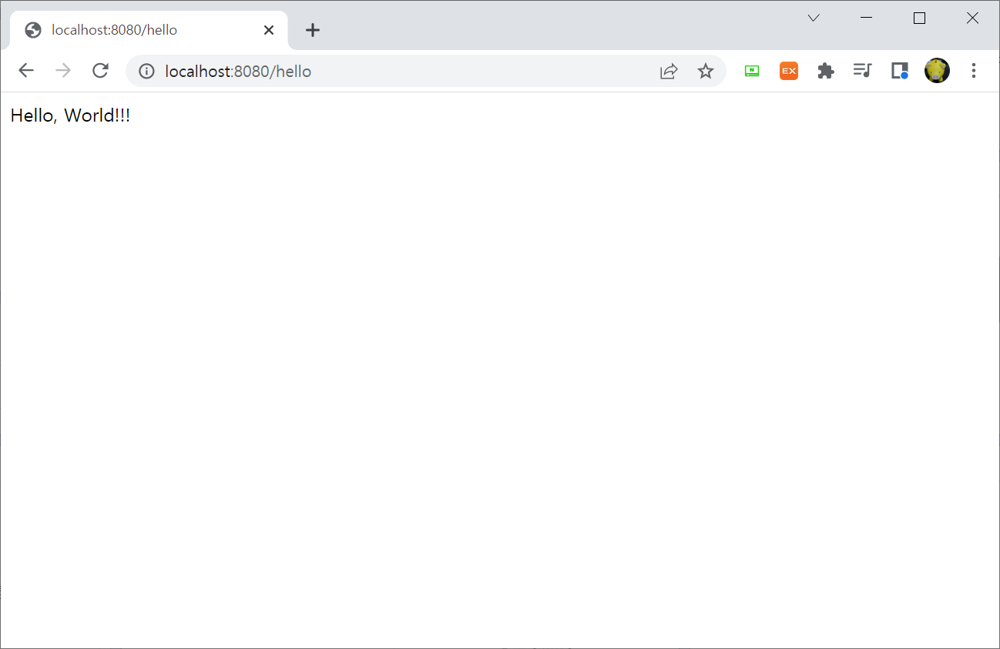

오픈 소스 마이크로 프레임워크입니다. 따라서 마이크로 서비스 기반 Spring 애플리케이션을 만드는 데 도움이 됩니다. Pivotal Software, Inc.에서 개발합니다.
# 커맨드에서 아래명령을 입력했을때 버전이 표시되지 않으면 환경 변수 설정을 해준다.
$ javac -version
javac 18.0.2
# window key + R을 누른뒤, sysdm.cpl을 입력한다.(시작 버튼을 누른뒤 검색에서 고급 시스템 설정을 검색해도 됨)
# 고급탭에 환경변수를 누른다.
# 시스템 변수에 새로 만들기를 선택한다.
변수 이름(N) : JAVA_HOME
변수 값(V) : C:\Program Files\Java\jdk1.8.0_281 (JDK가 설치된 경로)
# 시스템 변수의 Path를 눌러 편집을 클릭한다.
# 새로 만들기를 클릭한후 다음을 입력한다.
%JAVA_HOME%bin
‘Spring Boot Tools’ 확장팩은 다음 파일 패턴을 가지는 파일에 대해서 파일수정할 때 활성화된다.
.java: 스프링 부트 사양을 따르는 경우(@SpringBoot 애너테이션과 main() 메서드가 함께있음) 활성화
application*.properties
application*.yml
‘Spring Initializr Java Support’ 확장팩은 VSCode 내에서 Spring Initialzr(https://start.spring.io/) API를 이용하여 스프링 부트 프로젝트를 구성할 수 있다.
‘Spring Initializr Java Support’ 확장팩은 VSCode 내에서 Spring Initialzr(https://start.spring.io/) API를 이용하여 스프링 부트 프로젝트를 구성할 수 있다.
logging:
level:
'[org.springframework.web]': debug
package test.springboot.vscode.testvscode.web;
import org.springframework.web.bind.annotation.GetMapping;
import org.springframework.web.bind.annotation.RestController;
import lombok.RequiredArgsConstructor;
import test.springboot.vscode.testvscode.service.HelloWorldService;
@RestController
@RequiredArgsConstructor
public class HelloWorldController {
private final HelloWorldService helloService;
@GetMapping("/hello")
public String hello() {
return helloService.hello();
}
}
package test.springboot.vscode.testvscode.service;
import org.springframework.stereotype.Service;
@Service
public class HelloWorldService {
public String hello() {
return "Hello, World!!!";
}
}
